Jelajah Seoul
A Seoul exploration game made with my team for an introductory technology course. Pick a character, explore the map, and keep an eye on your health and inventory.
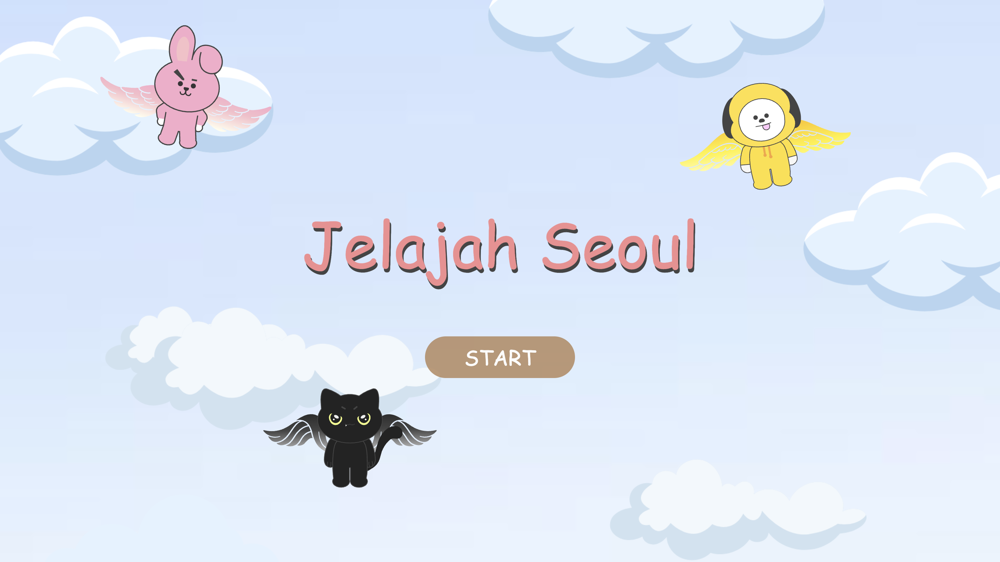
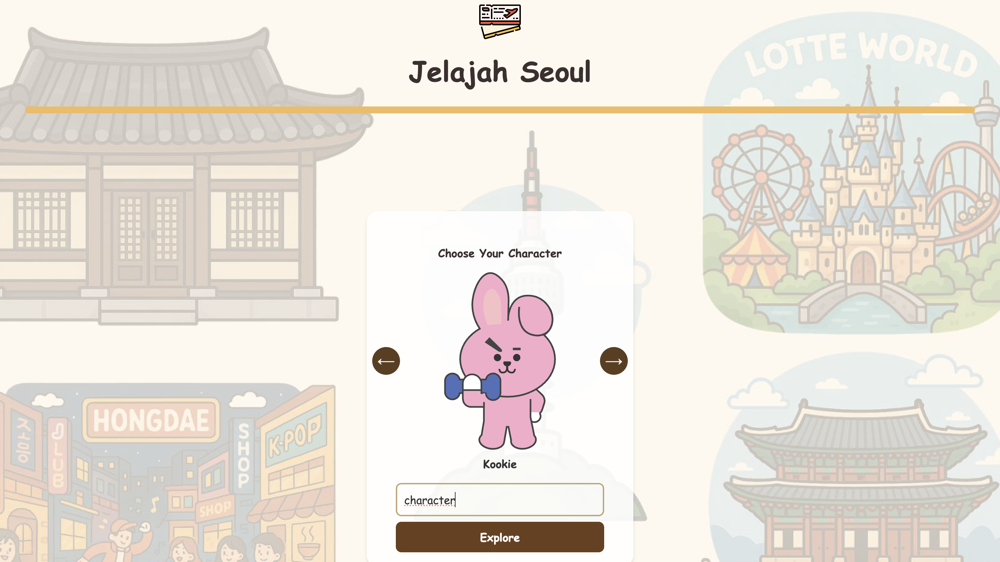
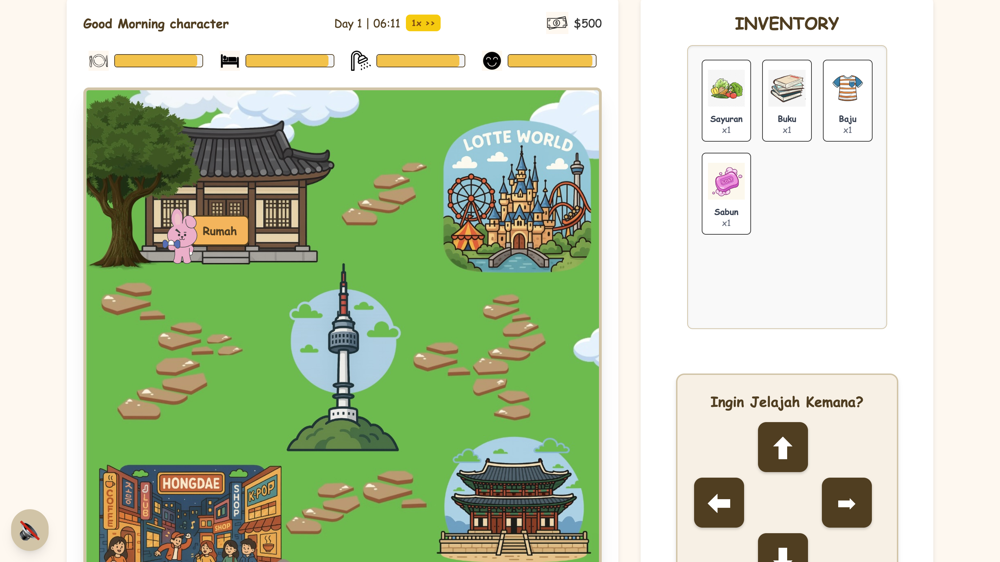
Choose your path →Informatics Engineering student, developer, and creative thinker. I love building useful things and making the details feel just right.
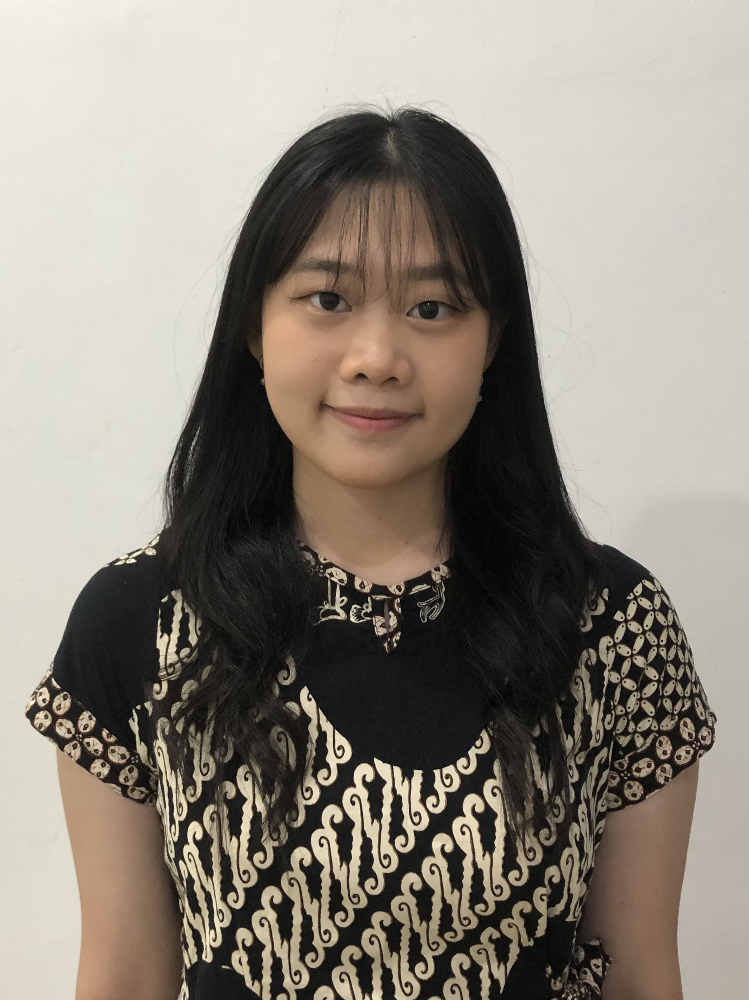
I’m a fifth-semester Informatics Engineering student at Universitas Multimedia Nusantara. Sociable, adaptable, and always eager to learn, I enjoy bringing people and ideas together.
I’m interested in computers, social media, and the arts. My work and organizational experiences have taught me to communicate clearly, create with care, and stay calm when solving a tricky problem. From apps and websites to events and performances, I like making things that work well and feel welcoming.
Good ideas get better when we build them together.
A few projects from class, collaboration, and curiosity. Each one taught me something new.
A Seoul exploration game made with my team for an introductory technology course. Pick a character, explore the map, and keep an eye on your health and inventory.



Choose your path →A native Android app for discovering productive spaces and hangout spots nearby, using real-time location. Built with Kotlin, Jetpack Compose, and MVVM.
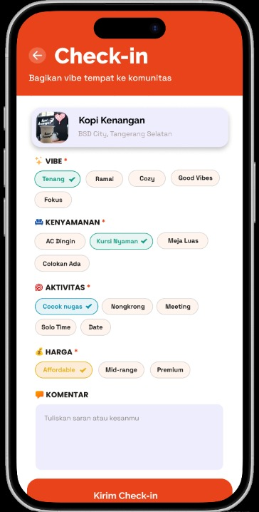
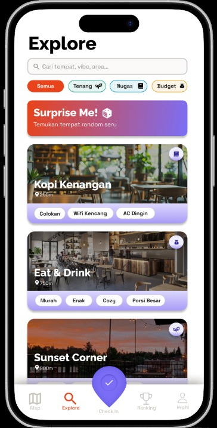
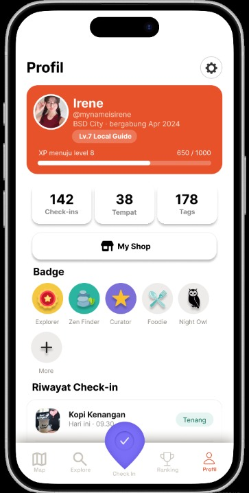
A website for GPdI Bethlehem Kelapa Gading Church to find worship schedules and upcoming events, with an admin page for managing content.
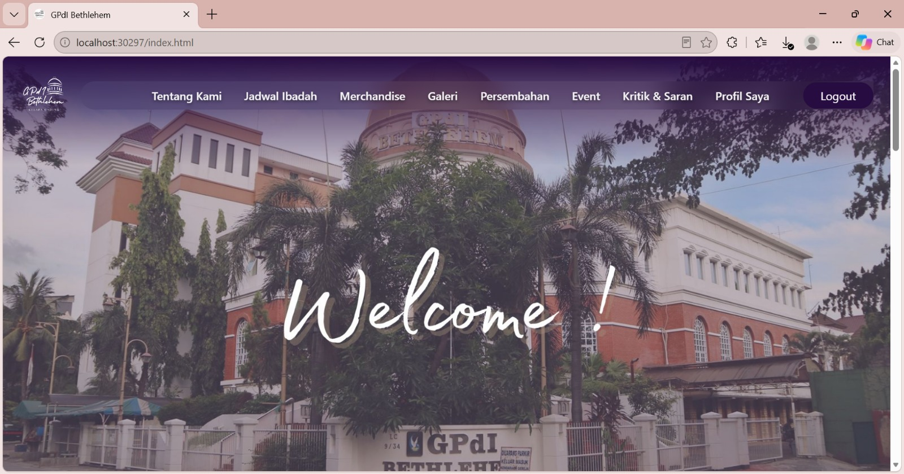
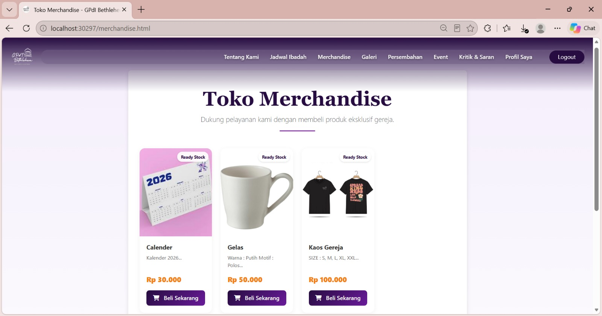

A playful 3D platformer developed in Unity for a Game Development midterm project. Built around one simple goal: keep jumping.
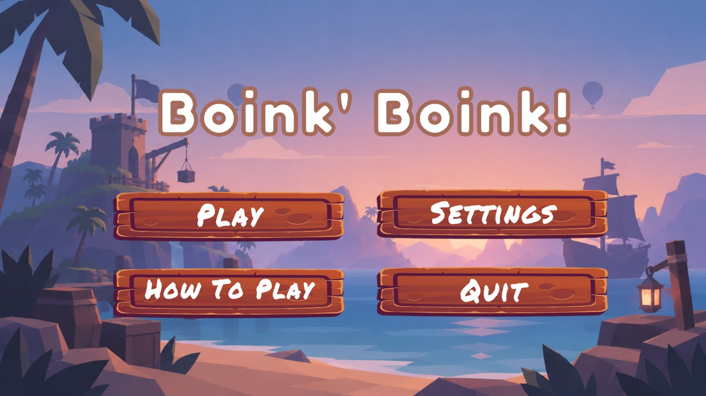

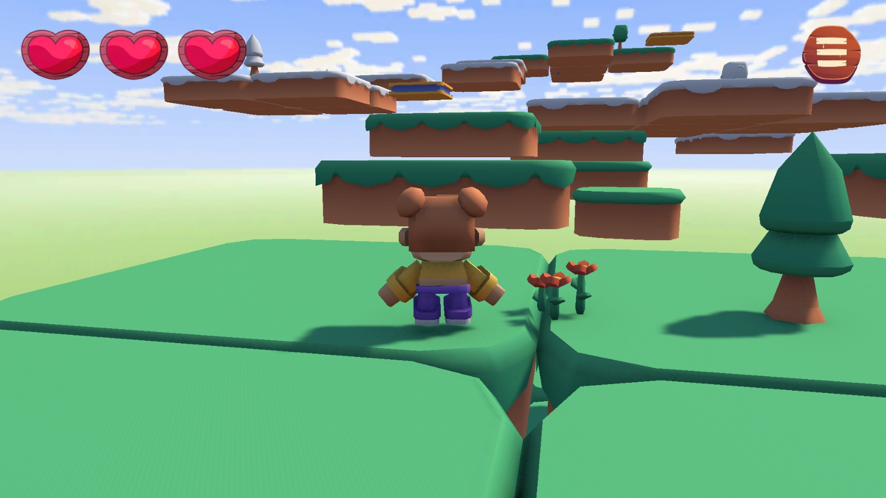
An interactive mobile app prototype designed in Figma. Ranked 21st among 70 participants nationwide.
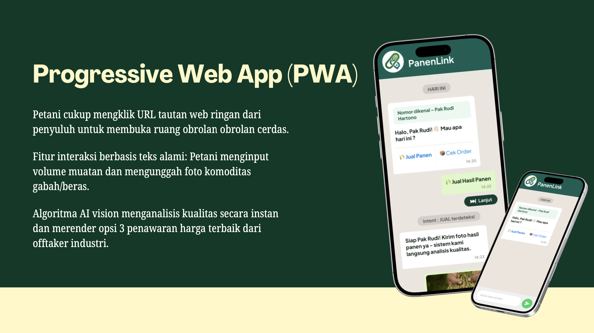
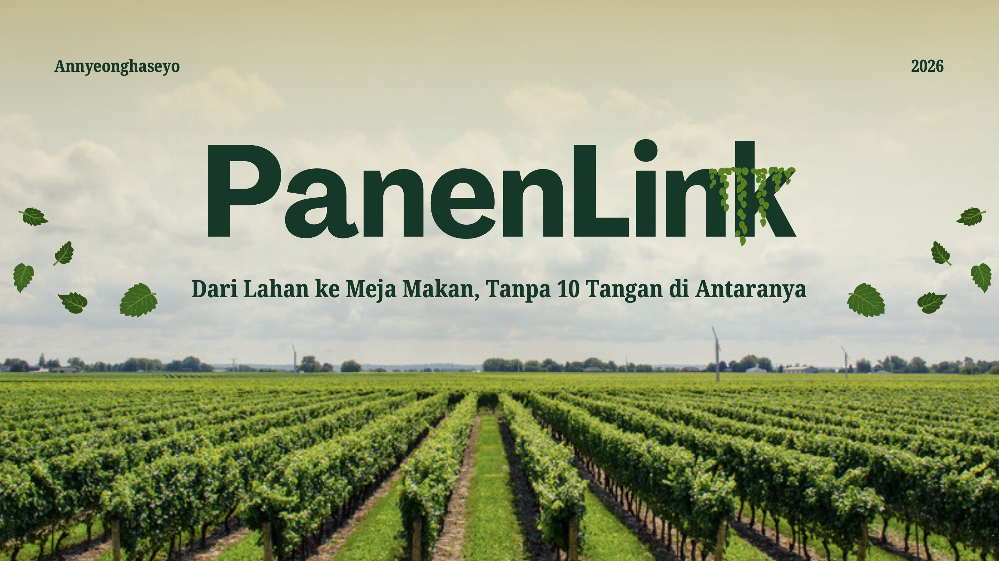
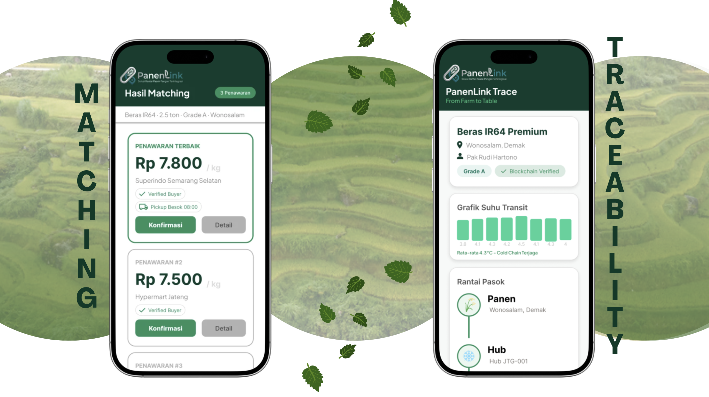
A group project building the website for Starlight, UMN’s talent search competition. Explore the divisions, stages, and event information on the official site.
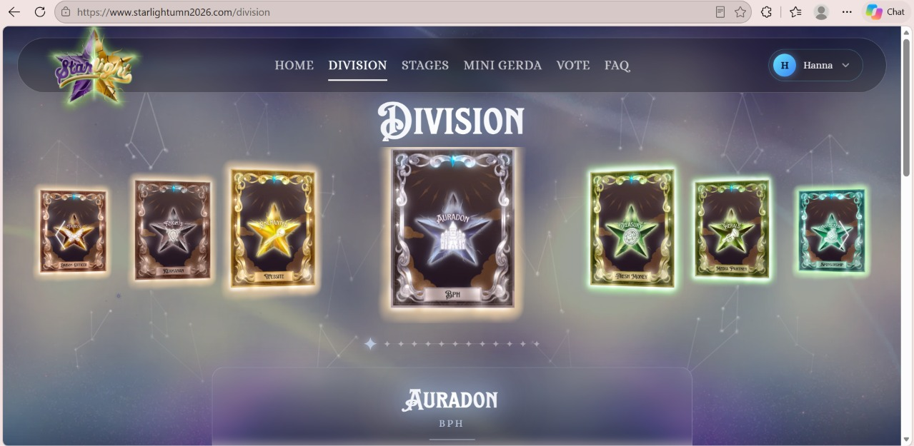


I’m the administrator of Teater KataK website gen-17. The site shares Teater KataK’s shows and lets visitors buy performance tickets, with an admin area for managing ticket sales and site content.
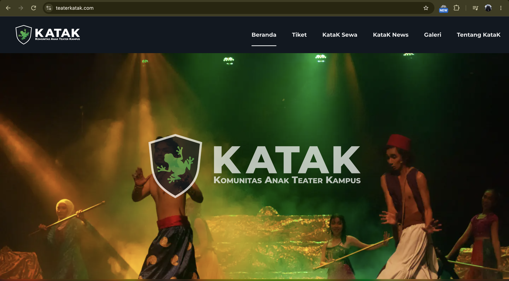
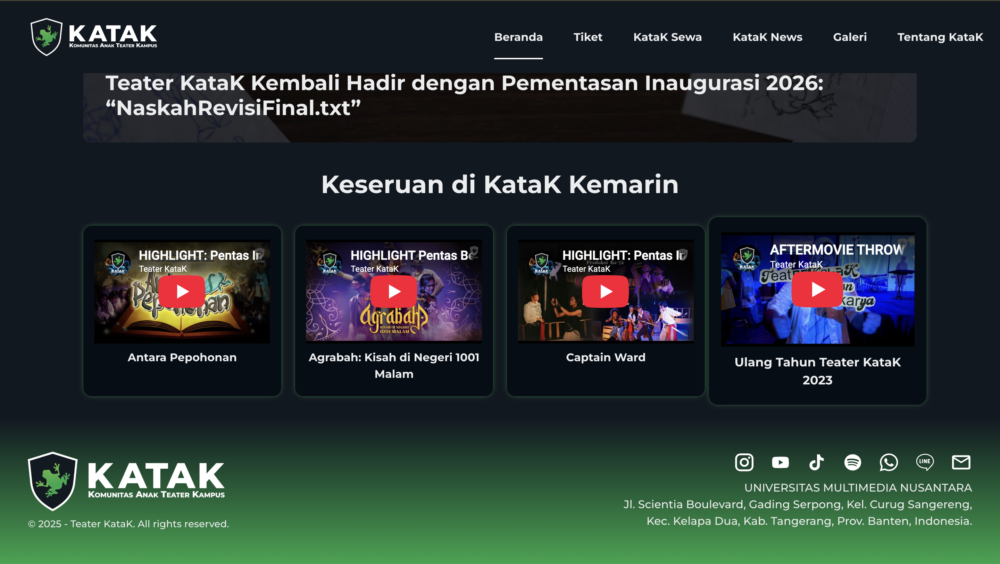
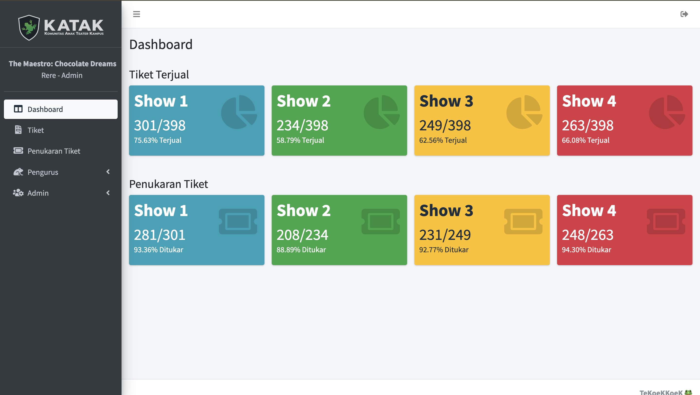
I’ve learned as much from people and projects as I have from code.
Informatics Engineering · Aug 2024 — Present
High School · Jul 2021 — Jun 2024
Managed an event booth, welcomed visitors, communicated with designers from South Korea, and tracked incoming and sold garments.
Forever Dance Center Jakarta · Taught dance cover classes to students aged 6–17 and helped prepare performances and events.
Welcome guests, guide seating, support registration, and help make every event feel warm and organized.
From OSIS leader and treasurer to costume division vice coordinator, liaison officer, and website division member—learning to lead, listen, and work as a team.
Gold Medal · International Science and Invention Fair Online Competition, Technology
21st Place · Protothon Prototype Competition
Finalist · Software Engineering Pitching Day
Scholarship · Universitas Multimedia Nusantara, first semester; 3rd highest graduation grade in high school
Dance competition wins · DBL UBS Gold and Chuseyo; 3rd place, National Student Floorball Championship
FDC Advance K-Pop Exam
OSIS SMA Marie Joseph certificate
I’m always happy to meet kind people and collaborate on thoughtful projects.